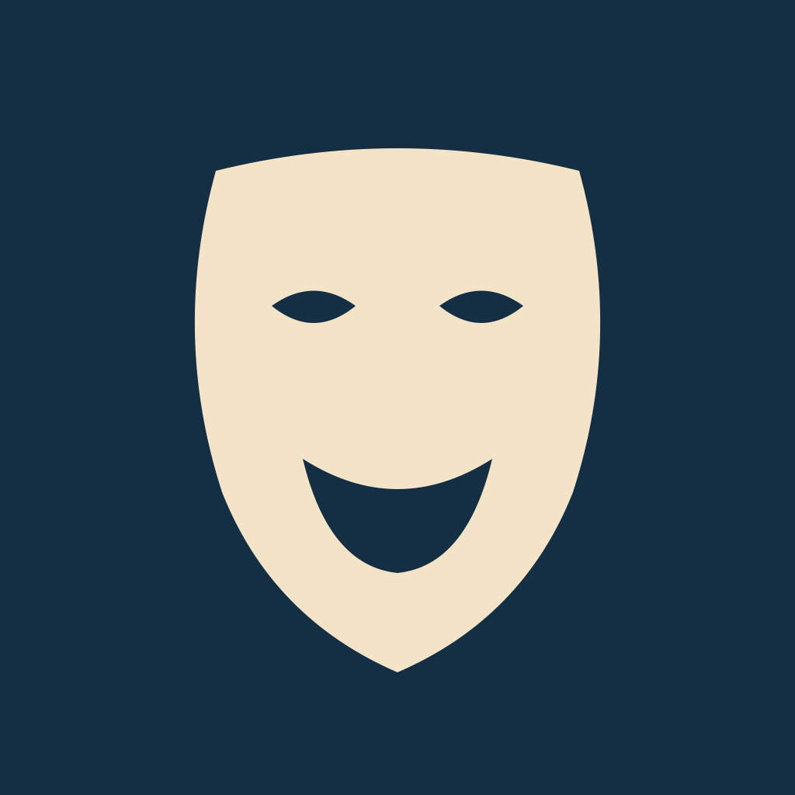

Acting · 연기
작품의 출처와 확인 내용을 함께 정리합니다. 인물의 감정과 그 선택을 뒷받침하는 장면 속 근거를 기록하세요.

Entry Performance독립 학습 · Entry Performance
연습에 나만의 의도를 더하세요. Entry Performance Study는 연기·장면 창작·마임을 위한 개인 장면 노트와 직접 만든 지식 연습 자료를 함께 제공합니다.
출시 준비 중
앱 출시를 준비하고 있습니다. 아직 다운로드할 수 없습니다.
앱 학습 자료·장면 노트·기본 화면은 영어입니다. 웹사이트는 영어와 한국어로 제공합니다.
나의 말로 기록하는 연습
Entry scene notebook
먼저 준비하는 분야와 형식을 선택하세요. 선택한 내용에 맞는 기록 항목이 표시됩니다.
작품의 출처와 확인 내용을 함께 정리합니다. 인물의 감정과 그 선택을 뒷받침하는 장면 속 근거를 기록하세요.
개인 경험을 바탕으로 선택한 주제와 그 이유를 기록합니다. 현재 허용되는 주제는 교사와 확인하세요.
마임의 제목과 선택한 이유를 적습니다. 일관되게 표현할 가상의 사물과 움직임을 정리하세요.
Solo 또는 Duologue를 선택합니다. Duologue에서는 상대의 단서와 함께하는 동작을 기록할 수 있습니다. 온라인 공동 노트를 만들거나 상대에게 전송하는 기능은 아닙니다.
나만의 출발점
장면 제목과 연습 초점은 필수 항목입니다. 장소, 사건의 순서와 직접 입력한 장면 시간을 함께 정리하세요. 입력한 시간은 개인 메모이며 자동 타이머나 평가 점수가 아닙니다.
내가 또는 관찰자가 알아차린 점을 적고 다음에 시도할 변화 한 가지를 남깁니다. Save로 현재 워크시트를 기기에 저장합니다. 다시 열면 마지막 저장 내용을 복원하며, 여러 이름의 노트나 버전 이력을 관리하는 기능은 아닙니다.
직접 만든 시간제한 없는 지식 문제와 해설, 개념 자료와 저장한 문제를 살펴보세요. 독립적인 준비를 돕는 자료이며 공식 레퍼토리 제공·작품 승인·실기 평가를 대신하지 않습니다.
아닙니다. RushLabs가 독립적으로 개발한 학습 앱이며 LAMDA 또는 정부 기관과 제휴하거나 해당 기관의 보증을 받지 않습니다. 시험 운영·실기 평가·자격 부여를 제공하지 않습니다.
아닙니다. 직접 만든 앱 예시가 시험 레퍼토리로 자동 인정되는 것은 아닙니다. 출판물 출처 조건, 허용 주제와 제목, 최신 시험 요건은 교사 및 공식 주관 기관과 확인하세요.
Save를 누르면 현재 워크시트를 기기에 저장하며 다시 열면 저장한 내용을 복원합니다. 계정·클라우드 동기화·상대와의 메시지·버전 이력은 제공하지 않습니다. 중요한 기록은 별도로 보관해 주세요.
아직 출시 전입니다. 포함된 학습 자료와 장면 노트를 제공하는 유료 다운로드 앱으로 준비하고 있습니다. 별도 앱 내 결제나 구독은 활성화되어 있지 않습니다. 최종 가격과 지역별 제공 여부는 출시 후 스토어에서 안내합니다.
출시를 준비하는 동안에도 지원과 개인정보 안내를 확인할 수 있습니다.